Computer Vision¶
How to observe and understand the world is one essential task in computer vision. Our team works on finding solutions to 3D visual understanding, especially on 3D object recognition and retrieval. Current projects include multi-view object recognition for self-driving vehicle, 3D multi-modal (point cloud, multi-view, volumetric and mesh) data fusion, high-speed visual reconstruction and visual detection.
3D Object Recognition and Retrieval¶
3D data recognition and analysis is surely a fundamental and intriguing problem in the field of computer vision. With the popular of 3D sensors, 3D data processing has broad applications spanning from environment understanding to self-driving. Thus, how to understand 3D data, such as recognizing and retrieving 3D shapes, has attracted much attention of community of computer vision in recent years. 3D data mainly have four kind of representation: voxel, multi-view, point cloud, mesh. Our works widely lie in the recognition and retrieval tasks of above modalities.
GVCNN: Group-View Vonvolutional Neural Network¶
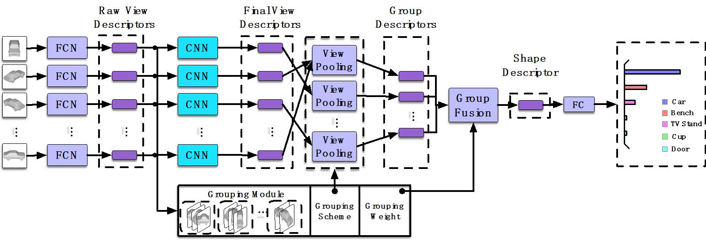3D shape recognition has attracted much attention recently. Its recent advances advocate the usage of deep features and achieve the state-of-the-art performance. However, existing deep features for 3D shape recognition are restricted to a view-to-shape setting, which learns the shape descriptor from the view-level feature directly. Despite the exciting progress on view-based 3D shape description, the intrinsic hierarchical correlation and discriminability among views have not been well exploited, which is important for 3D shape representation. To tackle this issue, in this paper, we propose a group-view convolutional neural network (GVCNN) framework for hierarchical correlation modeling towards discriminative 3D shape description. The proposed GVCNN framework is composed of a hierarchical view-group-shape architecture, i.e., from the view level, the group level and the shape level, which are organized using a grouping strategy. Concretely, we first use an expanded CNN to extract a view level descriptor. Then, a grouping module is introduced to estimate the content discrimination of each view, based on which all views can be splitted into different groups according to their discriminative level. A group level description can be further generated by pooling from view descriptors. Finally, all group level descriptors are combined into the shape level descriptor according to their discriminative weights. Experimental results and comparison with state-of-the-art methods show that our proposed GVCNN method can achieve a significant performance gain on both the 3D shape classification and retrieval tasks.
Multi-Loop-View Convolutional Neural Network¶
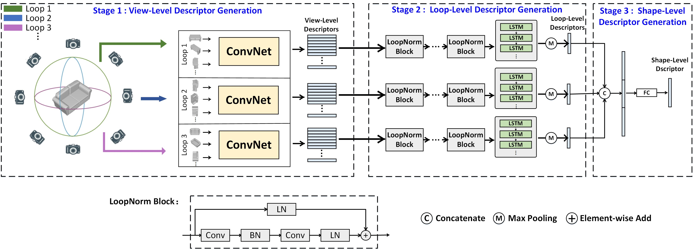The proposed Multi-Loop-View Convolutional Neural Network (MLVCNN) framework introduces a hierarchical view-loop-shape architecture, to conduct 3D shape representation from different scales. The proposed Loop Normalization and LSTM are utilized for considering the intrinsic associations of the different views in the same loop.
MeshNet¶
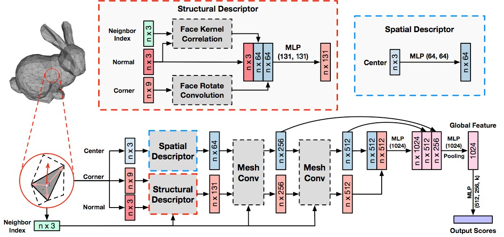Mesh is an important and powerful type of data for 3D shapes. Due to the complexity and irregularity of mesh data, there is little effort on using mesh data for 3D shape representation in recent years. We propose a mesh neural network, named MeshNet, to learn 3D shape representation directly from mesh data. Face-unit and feature splitting are introduced to solve the complexity and irregularity problem. We have applied MeshNet in the applications of 3D shape classification and retrieval. Experimental results and comparisons with the state-of-the-art methods demonstrate that MeshNet can achieve satisfying 3D shape classification and retrieval performance, which indicates the effectiveness of the proposed method on 3D shape representation.
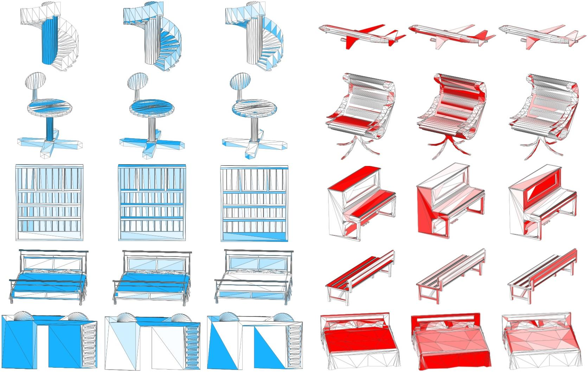PVNet¶
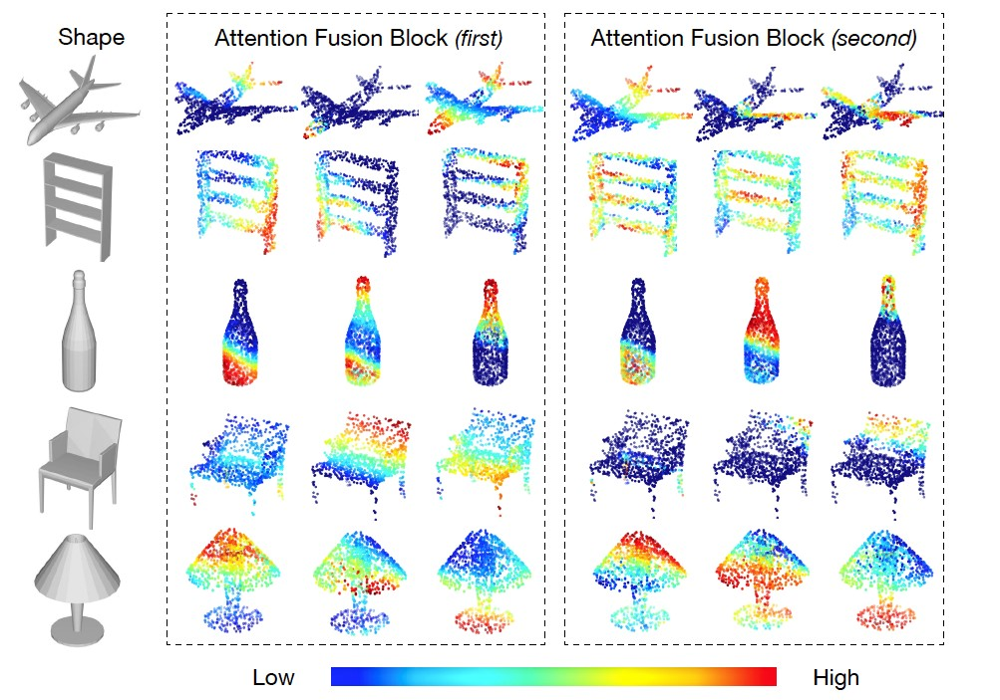Point cloud and multi-view data are individually two typical representations of 3D shape. Recently, various deep neural networks are proposed to process them. Our PVNet is the first neural network to jointly employ the point cloud data and multi-view data for 3D shape representation. The embedding attention fusion is introduced to exploit the complementary of two modalities. Experiments are conducted on ModelNet40 dataset. Experimental results and comparisons with state-of-the-art methods demonstrate that our framework can achieve superior performance.
DeepCCFV: Camera Constraint-Free Multi-View Convolutional Neural Network for 3D Object Retrieval¶
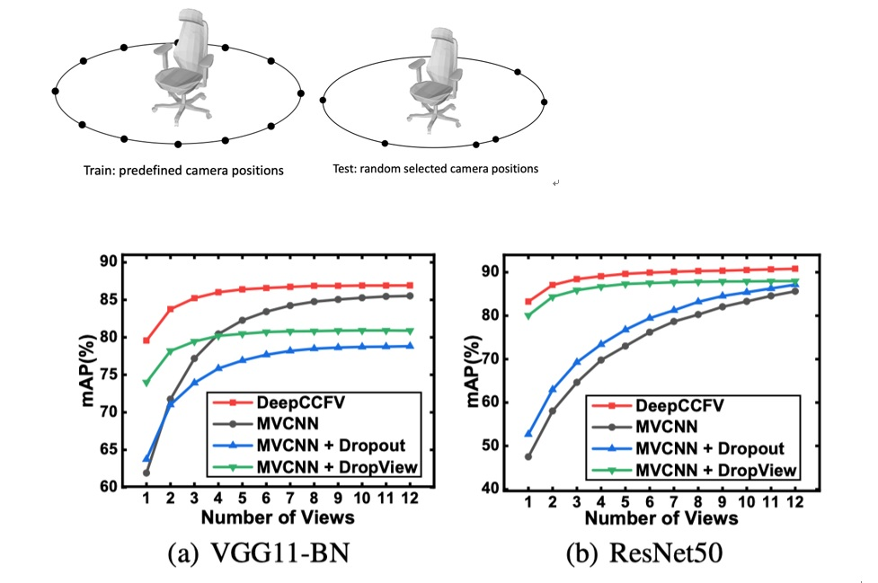In 3D object retrieval, projected views based approaches have shown superior performance compared with other methods in recent years. However, most of existing methods require a fix predefined camera position setting, which is impractical in real application. Fixed camera positions during the training procedure will also lead to over-fitting to the complete set of features obtained from these positions. To deal with these problems, we propose a camera constraint-free multiview convolutional neural network for 3D object retrieval. In this method, we proposed a feature augmentation method named Dropmax assembled in traditional multi-view convolutional neural network to eliminate the camera constraints. To evaluate the proposed method, we have conducted experiments on both intramodal and cross-modal retrieval tasks. Experimental results and comparison with existing state-of-the-art 3D object retrieval methods demonstrate the effectiveness of the proposed method.
ActivityNet Spatio-temporal Action Localization (AVA)¶
We obtained the first place of AVA (Both of CV Only Track and Full Modality Track) in the ActivityNet2018 Challenge (CVPR 2018). This task is intended to evaluate the ability of algorithms to localize human actions in space and time. Each labeled video segment can contain multiple subjects, each performing potentially multiple actions. The goal is to identify these subjects and actions over continuous 15-minute video clips extracted from movies.
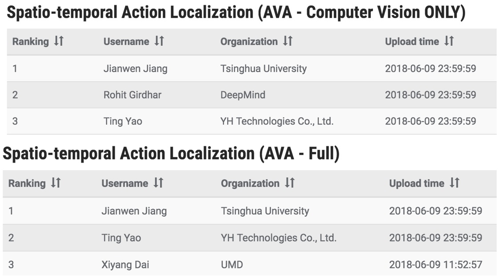Computer Vision in Social Media¶
Images play a crucial role now and heightened by the bombardment of images or videos that people experience today. Innovations in computer vision can reduce the costs of using images and videos as data. We build on computer vision methods for data gathering and filtering from social media streams, then apply these data for event classification and personalized emotion recognition.
Brand Data Gathering From Live Social Media Streams¶
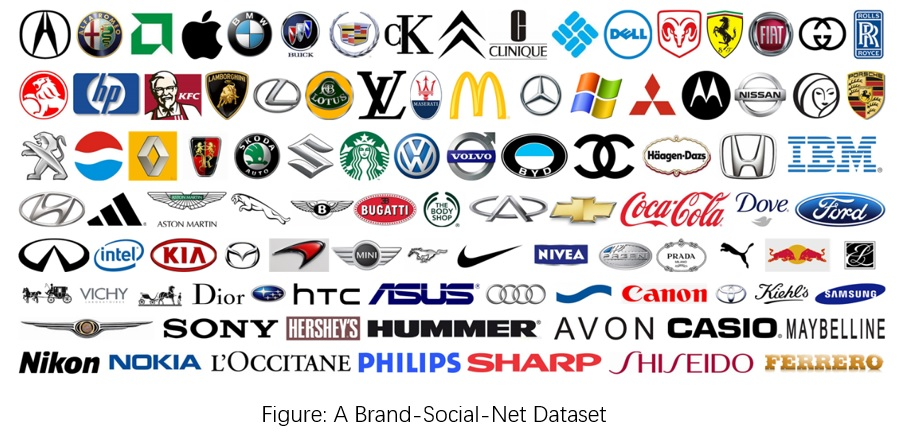We proposed a new method to gather data from social media streams and set up a large scale microblog dataset for evaluation in this paper. For the new multi-faceted brand tracking method, it gathers relevant data based on not just evolving keywords(the traditional keywords based approach), but also social factors (users, relations and locations) as well as visual contents as increasing number of social media posts are in multimedia form.
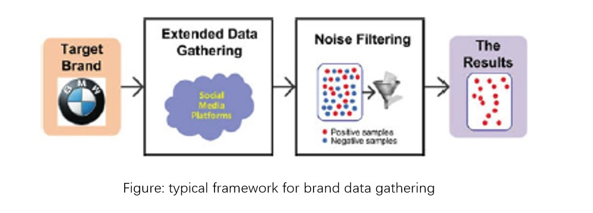For evaluation, we set up a large scale microblog dataset (Brand-Social-Net) on brand/product information, containing 3 million microblogs with over 1.2 million images for 100 famous brands.
Filtering of Brand-Related Microblogs Using Social-Smooth Multiview Embedding¶
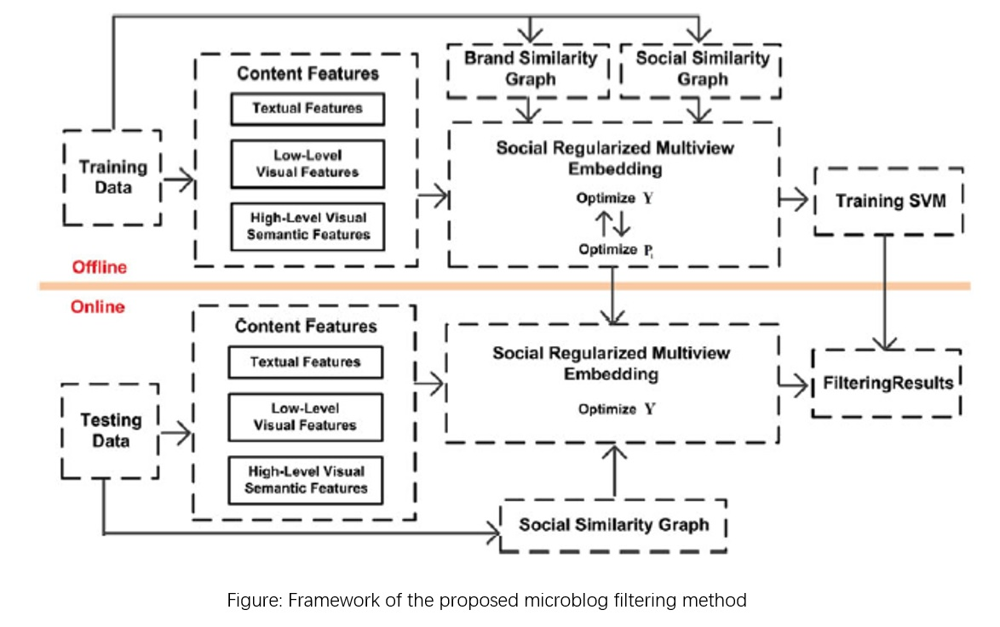We developed an accurate classifier to filter out noise by taking into account the multimedia content and social nature of brand-related data.
In particular, we developed a microblog filtering method based on a discriminative social-aware multi view embedding, and we also incorporate the brand and social relations among the microblogs to learn a discriminative and social-aware embedding Besides the conventional content-based features.
Moreover, we trained an off-the-shelf classifer such as SVM and applied them to microblog filtering. After verifying the efficacy of our method on noise filtering in the brand data gathering task on the Brand-Social-Net dataset, we found that our approach is able to achieve significantly better filtering performance and improve the quality of brand data gathering.
Event classification¶
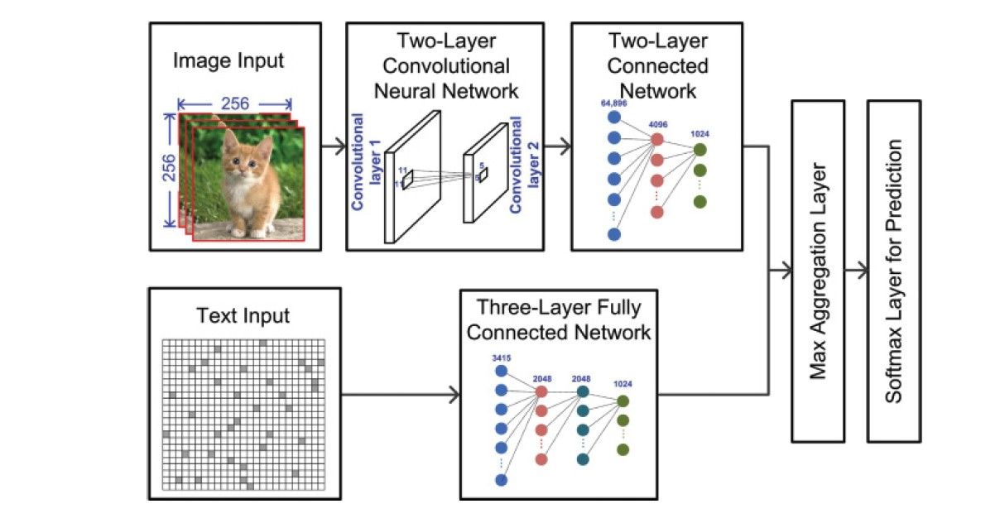Large-scale social media data has been increased rapidly due to the explosive development of social media platforms. With remarkable societal and marketing values, it is essential to extract important events in live social media streams. In our work, we utilize deep learning and social tracking to address two main challenges for event classification tasks, i.e., the short/conversational nature and the incompatible meanings between the text and the corresponding image in social posts, and the rapidly evolving contents. We first present a Multi-modal Multi-instance Deep Network (M2DN) architecture to handle the weakly labeled microblogs data. Then, we propose to employ social tracking to enrich the testing sample. Experimental results shows better performance for the event classification task compared with the state of art. Related work was published in ACM Transactions on Intelligent Systems and Technology.
Emotion recognition¶
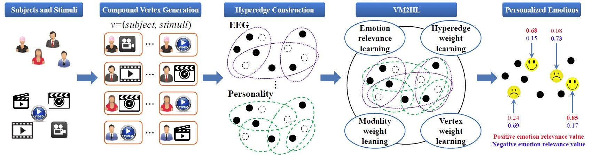Emotion recognition (ER) plays an important role in both interpersonal and human-computer interaction. Due to the complex expression nature of human emotions, many ER methods employ a multi-modal framework by considering multiple physiological signals. Unlike the existing methods, we propose to investigate the influence of personality on emotional behavior in a hypergraph learning framework. First, given the subjects and stimuli that are used to evoke emotions in subjects, we generate the compound tuple vertex (subject, stimuli). Second, we construct the multi-modal hyperedges to formulate the personality correlation among different subjects and the physiological correlation among corresponding stimuli. Finally, we obtain the personalized emotion recognition (PER) results after the joint learning of the vertex-weighted multi-modal multi-task hypergraphs. The experimental results demonstrate the superiority of the proposed method. Related work was published in IJCAI-18.